ContactForceN_ElastoPlasticLinear class
Contents
Description
This is a sub-class of the ContactForceN class for the implementation of the Linear Elasto-Plastic normal contact force model.
This model assumes that the normal contact force has only an elastic component 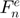 that is provided by a hysteric linear spring.
The hysteric spring stiffness adopts different values depending on whether elements approach or depart from each other. The unloading stiffness is always greater than the loading stiffness.
The energy dissipation in this model is due to the spring hysteresis and it is able to simulate the plastic deformation of elements during collisions.
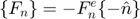
- Loading (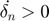):
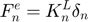
- Unloading (before detachment) (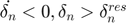):
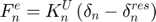
- Unloading (after detachment) (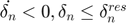):
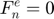
The loading stiffness coefficient 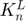 can be computed by 3 different formulas, if its value is not provided:
- Equivalent energy:
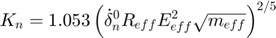
- Equivalent overlap:
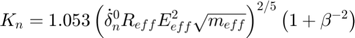
- Equivalent time:
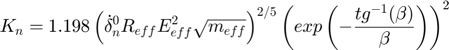
The unloading stiffness coefficient 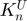 can be computed by 2 different formulas:
- Constant:
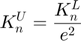
- Variable:
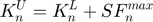
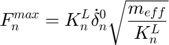
The residual overlap due to palstic deformation is computed as:
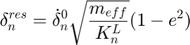
Notation:
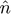: Normal direction between elements
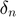: Normal overlap
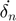: Time rate of change of normal overlap
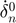: Time rate of change of normal overlap at the impact moment
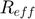: Effective contact radius
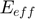: Effective Young modulus
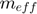: Effective mass
: Normal coefficient of restitution
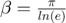
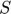: Variable unload stiffness coefficient parameter
References:
classdef ContactForceN_ElastoPlasticLinear < ContactForceN
Public properties
properties (SetAccess = public, GetAccess = public)
% Formulation options
load_stiff_formula uint8 = uint8.empty; % flag for type of loading stiffness formulation
unload_stiff_formula uint8 = uint8.empty; % flag for type of unloading stiffness formulation
% Contact parameters
unload_stiff double = double.empty; % unloading stiffness coefficient
unload_param double = double.empty; % variable unload stiffness coefficient parameter
residue double = double.empty; % residual overlap
end
Constructor method
methods
function this = ContactForceN_ElastoPlasticLinear()
this = this@ContactForceN(ContactForceN.ELASTOPLASTIC_LINEAR);
this = this.setDefaultProps();
end
end
Public methods: implementation of super-class declarations
methods
%------------------------------------------------------------------
function this = setDefaultProps(this)
this.load_stiff_formula = this.ENERGY;
this.unload_stiff_formula = this.CONSTANT;
end
%------------------------------------------------------------------
function this = setCteParams(this,int)
% Needed properties
r = int.eff_radius;
m = int.eff_mass;
y = int.eff_young;
v0 = abs(int.kinemat.v0_n);
e = this.restitution;
e2 = e^2;
S = this.unload_param;
beta = pi/log(e);
% Loading stiffness coefficient
switch this.load_stiff_formula
case this.ENERGY
this.stiff = 1.053*(v0*r*y^2*sqrt(m))^(2/5);
case this.OVERLAP
this.stiff = 1.053*(v0*r*y^2*sqrt(m))^(2/5) * exp(-atan(beta)/beta)^2;
case this.TIME
this.stiff = 1.198*(v0*r*y^2*sqrt(m))^(2/5) * (1+1/beta^2);
end
% Unloading stiffness coefficient
switch this.unload_stiff_formula
case this.CONSTANT
this.unload_stiff = this.stiff / e2;
case this.VARIABLE
fmax = this.stiff * v0 * sqrt(m/this.stiff);
this.unload_stiff = this.stiff + S * fmax;
end
% Residual overlap
this.residue = v0 * sqrt(m/this.stiff) * (1-e2);
end
%------------------------------------------------------------------
function this = evalForce(this,int)
% Needed properties
dir = int.kinemat.dir_n;
ovlp = int.kinemat.ovlp_n;
vel = int.kinemat.vel_n;
res = this.residue;
kl = this.stiff;
ku = this.unload_stiff;
% Elastic force according to loading or unloading behavior
if (vel > 0) % loading
f = kl * ovlp;
elseif (vel < 0 && ovlp > res) % unloading
f = ku * (ovlp - res);
else
f = 0;
end
% Total tangential force vector (against deformation and motion)
this.total_force = -f * dir;
end
end
end